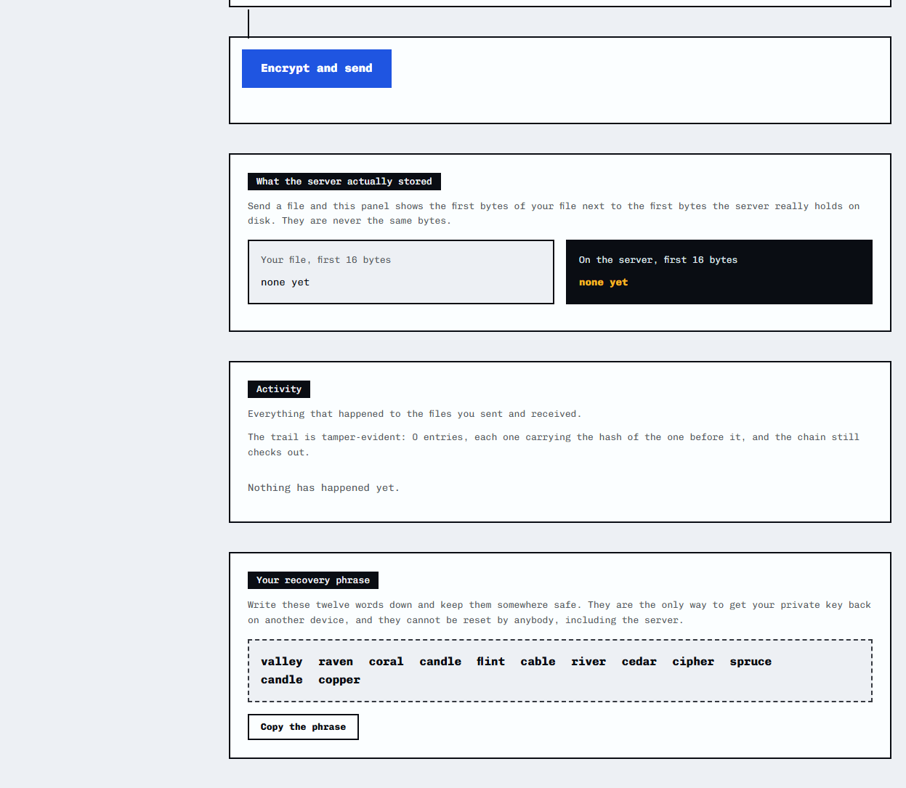
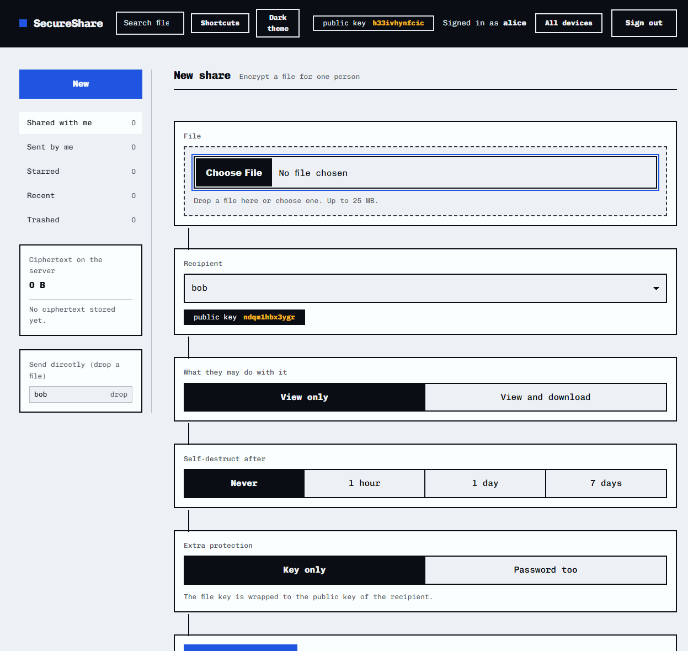
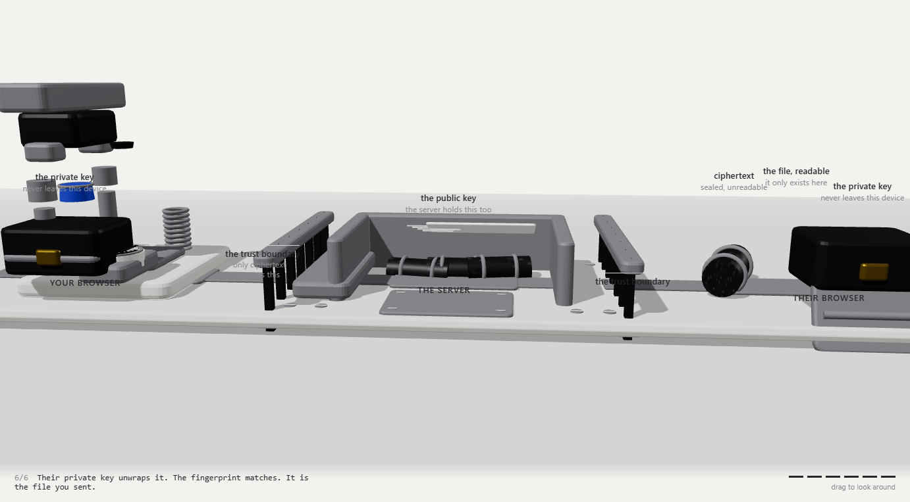

SecureShare — a walkthrough for the demonstration. Everything a reader needs to run
the project and to see, in three places at once, that the server never holds a readable file.
21ECC402P — Computer Communication and Network Security
Pradeesh M (RA2311004010278) · Varun P R (RA2311004010287) · Sugandhan A (RA2311004010297)
What the demonstration proves
A file is encrypted in the sender's browser before it is uploaded. The server receives the
encrypted bytes, the IV and the AES key wrapped under the recipient's public key. It never
receives the file, the AES key or the private key. So the three places we show the stored bytes
are unreadable, and only the recipient's browser can turn them back into the original file.
1 · Run it
The application installs nothing. Node 18 or later is enough.
git clone https://github.com/aswathas/sugan-project.git
cd sugan-project
npm start
Open http://127.0.0.1:3000, or the live version at
https://secureshare-2r3j.onrender.com. The demonstration needs
two people, so use two browsers, two profiles, or two machines on the same network.
SecureShare — 21ECC402PPage 1 of 4
2 · The demonstration, step by step
Register the sender (machine A). The browser generates the key pair here, on this
machine. The private key is kept in IndexedDB as a non-extractable key, and the twelve-word
recovery phrase is shown once — write it down; nobody can reset it.
a twelve-word phrase, and a line saying the key never left this device.
Register the recipient (machine B). Same thing. The recipient's public key is
published to the server; the private key stays on machine B.
Send a file (machine A). Press New, choose a PDF, choose the recipient, choose
view-only or view-and-download, choose the self-destruct time, and press Encrypt and send.
the fingerprint of the recipient's public key, and the file's SHA-256 hash.
Show what the server holds. The panel What the server actually stored puts the
first 16 bytes of your file next to the first 16 bytes the server really holds on disk.
two different byte strings. Your file starts %PDF-1.7; the server holds random-looking bytes.
Decrypt on the other side (machine B). The file appears under Shared with me.
Press Decrypt. It opens, and the card then reads verified, because the recipient's
browser recomputes the SHA-256 of the decrypted file and it matches the hash the sender sent.
the original PDF opens, byte for byte, and the card says verified.
Show the machine. Open /figure/journey.html. The scene draws
one file travelling: picked up as a readable sheet, sealed into a capsule by the press, carried
across the trust boundary as ciphertext, dropped into the server's hopper, and brought back out
and unwrapped by the recipient's private key.
the private keys stay in their boxes on both sides of the line; only the capsule crosses it.

The proof panel: the sender's file on the left, the server's bytes on the right.

The send panel: the recipient's key fingerprint before the file is sent.
SecureShare — 21ECC402PPage 2 of 4
3 · The three proofs, if the panel is not enough
In the terminal
This prints the name of every uploaded file next to the hex of the bytes actually stored on
disk, and the path of that file:
npm run show:ciphertext
kpit_loi.pdf
from jake to aswath permission: download
file on disk : data/blobs/22f55ef5-3d2e-4846-a3fa-b509eac5c082.bin
stored bytes : 260404
first 16 : 01 84 6f 1d db c5 3f ad 15 22 6d 9a 5f 84 ac 09
as text : ..o...?.."m._...
the sender's file began with something else; the server never saw it
On the disk
The stored file is data/blobs/<share-id>.bin. Open it in any hex
viewer and compare it with the original PDF: the PDF begins %PDF-1.7, the
stored file does not. data/db.json holds no file content at all — only
the id, the wrapped key, the IV and the size.
In the interface
The panel in step 4 above, and the Ciphertext on the server figure in the left rail,
which counts the bytes the server holds.
The workspace after signing in. The left rail counts the ciphertext on the server.
4 · Two extra checks, if the professor wants them
A third person is refused. Register an account that was never given the file and try
to open it. The server answers 403; the bytes stay out of reach.
The file expires. Send with the one-hour self-destruct. When the hour is up, the
server gives up the bytes and the card says so.
The trail is tamper-evident. Every entry in the Activity panel carries the hash of the
one before it, so an edited entry breaks the chain, and the panel says the chain no longer
checks out.
SecureShare — 21ECC402PPage 3 of 4
5 · The 3D scene
/figure/journey.html is the one-page drawing of the whole system in
three dimensions. It runs in the browser from the project's own origin — no third party is
contacted, and the page needs no build step.

Two browsers and one server, with a hard line between each browser and the server. The file is sealed into a capsule before it crosses.
6 · Where to read more
Report — report/SecureShare-Project-Report.pdf. Chapter 3 is
the system design: the key pairs, the wrapping, the trust boundary. Chapter 4 is the
verification, with the test cases and their results.
Source — https://github.com/aswathas/sugan-project. The whole
application is in server/, public/ and
figure/.
Readme — the README in the repository carries the same walkthrough, the list of
security choices and the stated limits of the design.
The one sentence to say at the end
The file was encrypted before it left the sender's browser, the server
stored only the encrypted bytes, and the only key that can read them is the recipient's private
key, which never left that browser either.